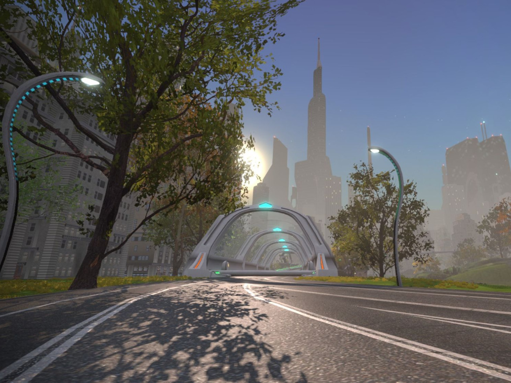
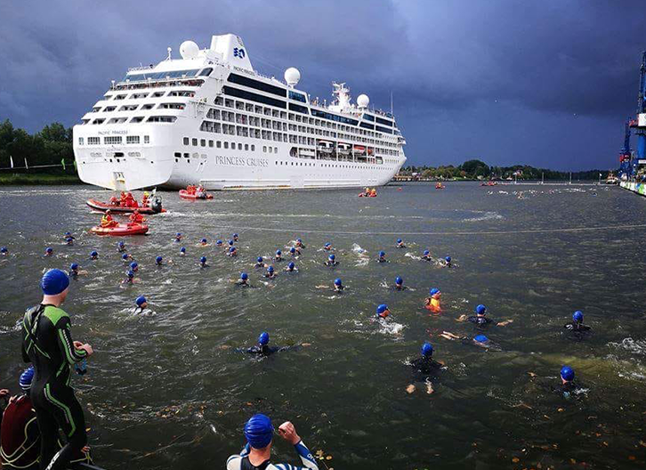
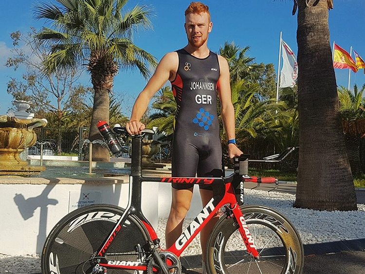
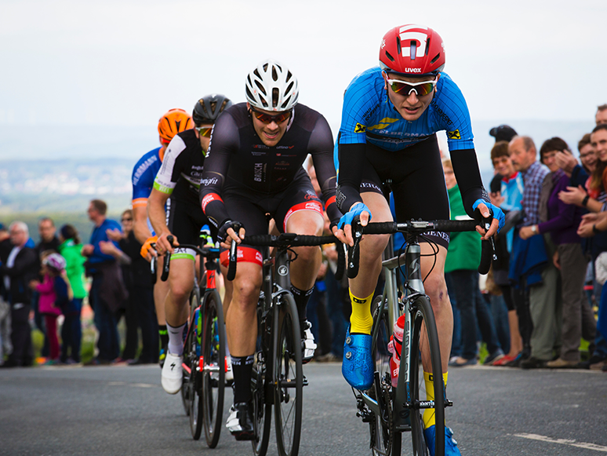
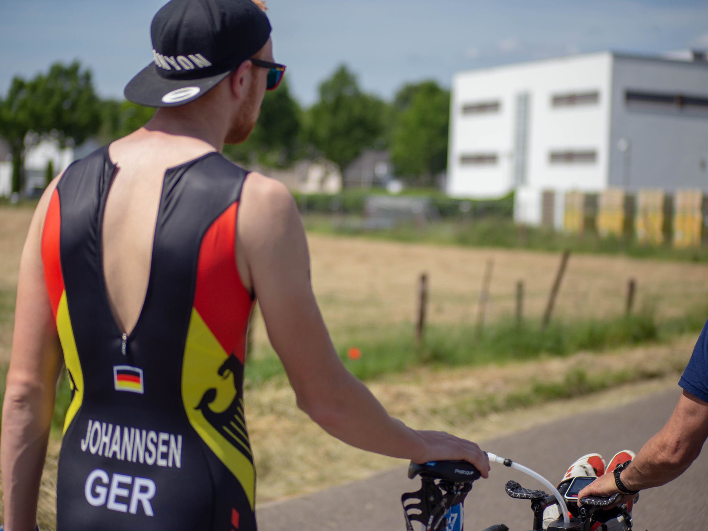

Let's Go Race!
Events
Believe me, the reward is not so great without the struggle.
Coming Races
Hier finden Sie eine Übersicht über meine kommenden Veranstaltungen
Über die derzeitige Situation
Aufgrund der aktuellen Lage sind diese Saison wahrscheinlich keine Wettkämpfe möglich, genauso fällt das Gruppentraining nur in beschränkter Form stattfinden können. Sobald es mehr Informationen gibt, werden die kommenden Veranstaltungen auf dieser Seite wieder gezeigt. Ich nutze die Zeit natürlich trotzdem um an der frischen Luft im Wasser und auf der Straße zu trainieren um für die nächste Saison gut oder vielleicht sogar besser gewappnet zu sein.
Stay healthy!
-

Zwift Race Bundesliga #2
12.07.2020
OnlineDas zweite Zwift Race steht an! Begleiten Sie mich auf der Strecke!
Zur Veranstaltung -

Zwift Race Bundesliga #3
24.08.2020
OnlineDas dritte Zwift Race steht an! Begleiten Sie mich auf der Strecke!
Zur Veranstaltung
Race Reports
-

Kanaltriathlon
-

Swim & Bike
22.07.2019
IbizaDie Swim&Bike Wettkämpfe auf Ibiza finden vor besonders schöner Kulisse statt.
Mehr lesen -

Weltmeisterschaften
28.02.2019
LausanneIn Lausanne, Schweiz kommt es zu einer der größten Herausforderungen meiner Saison.
Mehr lesen -

Kropp Triathlon
-

EM in Weert